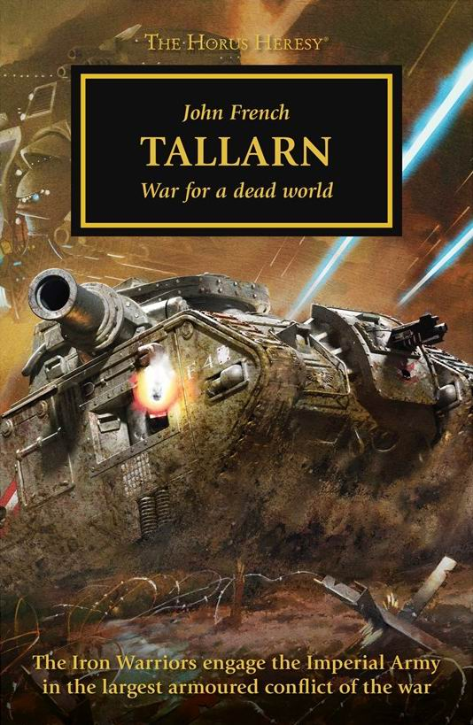

TALLARN: EXECUTIONER

Author: John French
Format: Novella
The surviving tank crews of Tallarn emerge into a poisoned world and prepare to defend it.
Listed in: Tallarn.
Introduction reviewed against Black Library’s description on 2026-09-27. The publisher page may contain spoilers.
Publication facts: publisher source, checked 2026-09-27.
Open this work in the interactive Archive to track reading progress and explore related works.